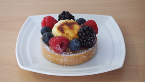
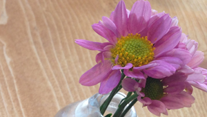

新着情報

新メニュー『3種のベリータルト』のご案内
旬なブラックベリー、ラズベリー、クランベリーをふんだんに使ったタルトです。ラズベリーの甘酸っぱさとチョコレートの甘さが、ほどよくミックス。口の中で繰り広げられる世紀の大ベリー博覧会状態に驚愕の声を上げること請け合いです！

年末年始の営業について
誠に勝手ながら、12月31日（火曜日）から年明け1月3日（金曜日）までお休みをいただきます。
ご挨拶
さまざまなお店が溢れる千代田区半蔵門 … 沙羅双樹の生い茂る 杉山神社をぬけたところに2002年2月25日、「café de chouette」（カフェ・ド・シュエット）は誕生しました。
地元の方々に愛され続け10余年、パリ下町風のお店を目指してがんばってきました。パリの老舗レストラン「ドゥブル・シュヴロン（double chevron）」にて修行したシェフによる職人の心意気の下、流行に左右されない料理のご提供を信条としています。本場フランスの味をリーズナブルなお値段でお楽しみいただけます。
メールアドレス
「info アットマーク extreme9537.cafedechouette.jp」（メールを送信する場合は、左記アドレスをメールソフトの送信先にコピペし「アットマーク」を「@」（半角）に書き換えてください。スパムメール防止の措置です。